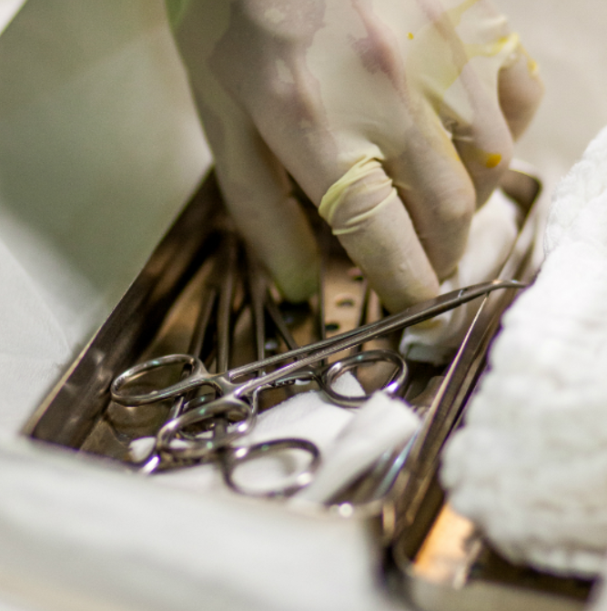

Since August, more than 620,000 Rohingya refugees have fled Myanmar. Many refugees who entered Bangladesh were injured and shocked. There are children who have lost their mothers and fathers, there are parents who have lost their children, and there are people who have lost everything they have.
When an emergency occurs, the first thing to think about is saving lives. Sometimes they find a suitable place to operate and perform emergency surgery. When an earthquake hit Haiti in 2010, we started treating our first patient in three minutes.
After wound and disease treatment, efforts should be made to address longer-term problems. Mental health experts try to help families and children with invisible wounds. And we also pay attention to providing people with places to stay, clean water, and preventing the spread of disease.
After an initial emergency response to a life-saving operation, you have to work to help a large number of people who are injured or sick.Immediately after an emergency, various injuries such as fractures, burns, abrasions, etc. occur. Doctors Without Borders devote all their energy to medical work to reduce people's pain and prevent infections.
Sponsoring the kit, which is made of high-quality stainless steel for surgery, from surgical scalpels and tweezers, will provide essential relief for Doctors Without Borders to do their most important mission: "Saving Life."
Deliver these important tools to the hands of skilled surgeons in the borderless society, so that thousands of lives can be saved each year.

This kit is an indispensable tool for emergency response activities of the Borderless Society. Doctors without borders try to use the kit to heal the wounds and ease the pain of people who have suffered great pain and trauma. The kit, which contains enough items for 100 dresses, includes tape, scissors, bandages, disinfectants, syringes, gloves, and more.
Sponsor this relief to help the Doctors Without Borders provide emergency medical assistance to those who have lost everything and have nowhere to turn to.